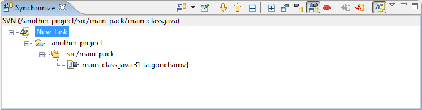
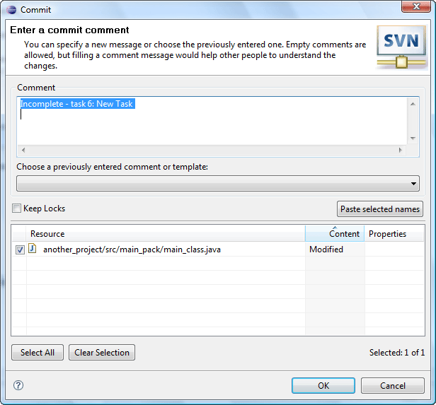

Mylyn integration
This topic provides an overview of integration with Mylyn and demonstrates how both tools can be used together.
- In order to start working with Mylyn integration you should have both, Subversive (including Mylyn integration) and Mylyn installed. To ensure everything is installed correctly you should select 'Mylyn Integration' feature while installing Subversive. That will lead to automatic installation of a required Mylyn version, if it is not installed yet at the moment.
- The next step is to checkout or share a project with the Subversive.
- Now create some task, e.g. "New Task" and then save it. Activate the task.
- As soon as the task is activated you can make a necessary changes in the source code.
- At this point you'll have all the changes you've made gathered under this tasks umbrella. Now, let's check where you can see it and what you can do:
First, choose the 'Team > Synchronize' action for this project in order to activate 'Synchronize View' related to Subversive. In the view press the 'Show Change Sets' button. The changes that were made after 'New task's' activation are now displayed in the corresponding change set. This way you can see all the code changes related with the particular Mylyn task.

If you want to commit the changes into the repository, you should select the 'Commit' action next. In the 'Commit' dialog you will see Mylyn task's status, name and URL as a suggested comment.

-
Modifying the task
Open the Mylyn's 'Task List View' and choose the 'Commit Context' action in the current task's pop-up menu. As a result the Subversive's 'Commit' dialog will be shown and you will be able to commit all the source code changes related to the task